Termální klid a jezerní pohoda
Sárvár, Gárdony - Agárd
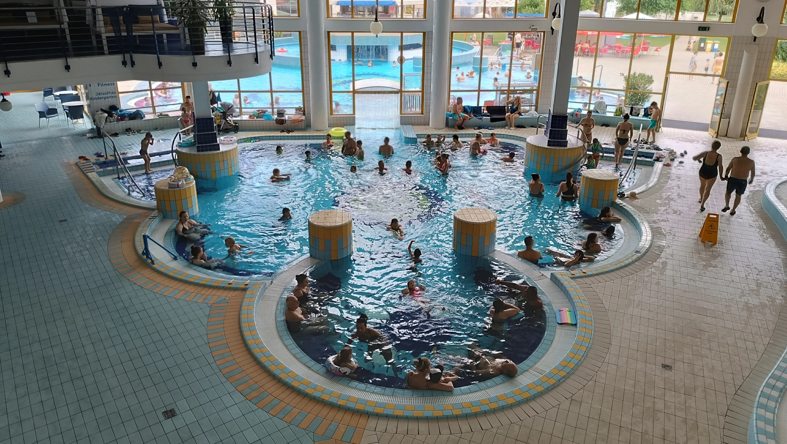
Letos jsme se vydaly o kus dál, chtěly jsme navštívit víc termálů a porovnat, které jsou lepší. Je těsně před prázdninami, takže počítáme s menším množstvím dětí. Vzaly jsme stan a vyrazily pěkně do kempu.
První zastávkou byl Sárvár. Má vlastní kemp s neomezeným vstupem do termálů. Je tu několik bazénů s teplou vodou a výrazně méně dětí než třeba v Győru. Navíc tu dohlížejí plavčíci, kteří okamžitě vyhazují děti z horkých bazénů. Přijde mi to zodpovědné, protože dlouhý pobyt v termální vodě je náročný hlavně pro srdce — i u starších lidí může při přehnaném „koupání“ dojít ke kolapsu.
Zázemí kempu je velmi slušné: kuchyňka (bez nádobí), sociálky, soukromá kempovací místa — sice na kamínkách, ale dá se to přežít. A co není přímo v kempu, najdeš hned v areálu termálů. Město je navíc moc pěkné, s jezírkem, kde si můžeš půjčit šlapadlo a projet se.
Po čtyřech dnech jsme se přesunuly do Gárdony, konkrétně do termálů Agárdi Gyógy. Ty jsou o něco menší a s angličtinou jsou tu víc na štíru — dominuje spíš němčina. Kemp je hned vedle, ale do termálů se musí přes parkoviště a hlavní vstup, což není úplně pohodlné.
Vybavení kempu je v pohodě: sociálky, kuchyňka (spíš společenská místnost), parkovací místa pod stromy… a spousta havěti. Začínají prázdniny, takže začínají najíždět lidi. V kempu jsme zažily i večerní příjezd policie a sanitky kvůli Rakušanům a jejich miminku, které nejspíš dostalo úžeh nebo úpal. Upřímně nechápu, jak někdo může vzít tak malé dítě do termálů.
Jinak je město hezké a hlavně jezero Velencei-tó. Dá se tu půjčit šlapadlo nebo kánoe a projet si celé jezero, které je bohaté na minerální látky a má léčivé účinky. Okolo jezera navíc vede cyklostezka, takže si tu přijdou na své i milovníci kol.
Sárvár: lázně, hrad a dokonalý relax
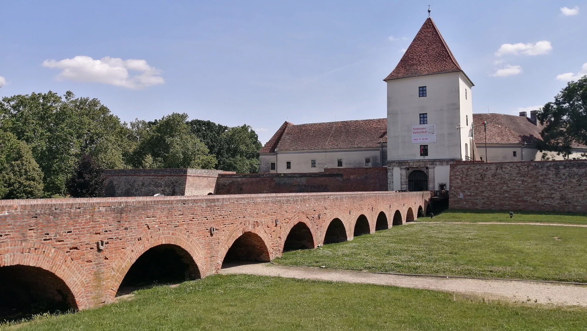
Sárvár je lázeňské město v západním Maďarsku s přibližně 15 000 obyvateli. Je známé především svými termálními a léčivými prameny, které patří k nejkvalitnějším v zemi a využívají se jak k relaxaci, tak k léčbě pohybového aparátu a dýchacích cest. Dominantou města je historický hrad Nádasdy, obklopený parkem, jezírkem a arboretem, které vytvářejí krásné a klidné centrum. Sárvár je oblíbený u rodin s dětmi i u lidí, kteří hledají wellness, klid a pohodovou atmosféru. Město je zelené, přehledné a ideální pro odpočinkovou dovolenou.
Co určitě navštívit:
- Hrad Nádasdy – historická pevnost s parkem a muzeem
- Arboretum Sárvár – botanická zahrada s desítkami druhů stromů
- Centrum města a okolí řeky Rába
Galerie
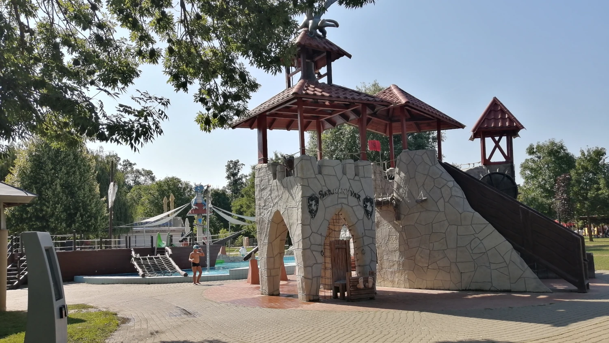
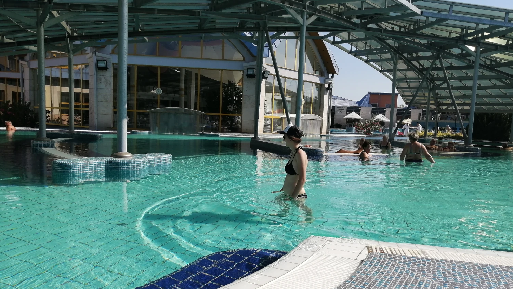
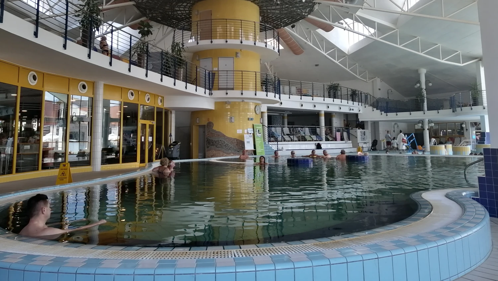
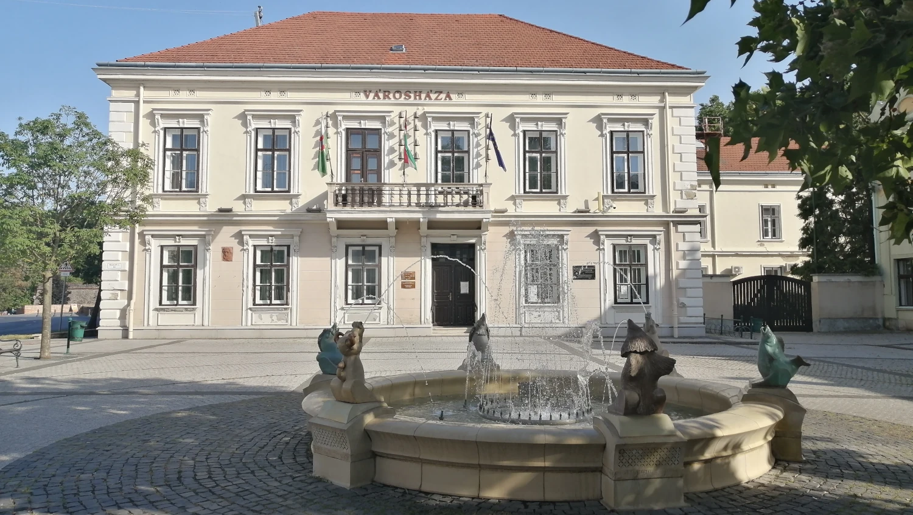
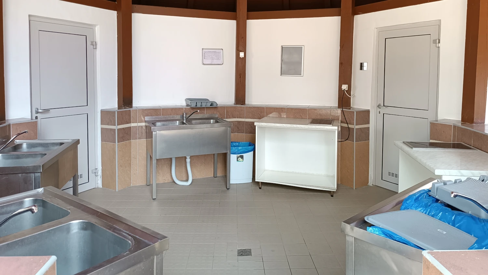
Gárdony: pláže, slunce a pohoda
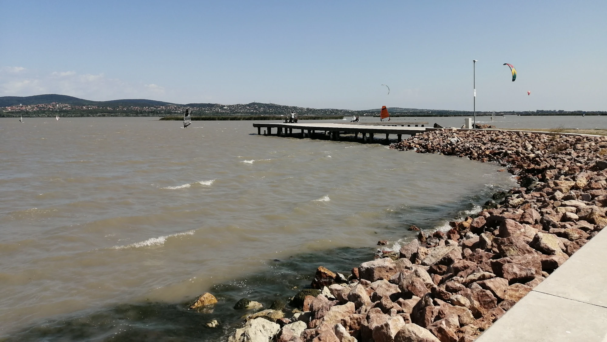
Agárd je rekreační část města Gárdony, ležící na jižním břehu jezera Velencei-tó, jednoho z nejteplejších jezer v Maďarsku. Celé město Gárdony má přibližně 10 000 obyvatel a Agárd slouží jako jeho hlavní turistická a lázeňská zóna. Oblast je známá dlouhými plážemi, teplou vodou, cyklostezkami a širokou nabídkou letních aktivit. V létě se Agárd mění v živé prázdninové letovisko plné restaurací, promenád a rodinných atrakcí, zatímco okolní mokřady a přírodní rezervace nabízejí klid a krásné výhledy.
Co určitě navštívit:
- Pláže u jezera Velence – ideální na koupání a odpočinek
- Promenádu a přístav v Agárdu
- Cyklostezku kolem jezera Velence
- Přírodní rezervace Dinnyési-Fertő
- Muzeum a pamětní dům spisovatele Gézy Gárdonyiho
Galerie
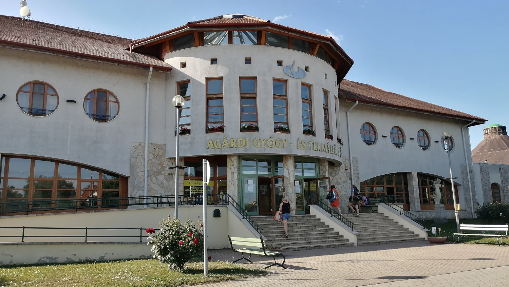
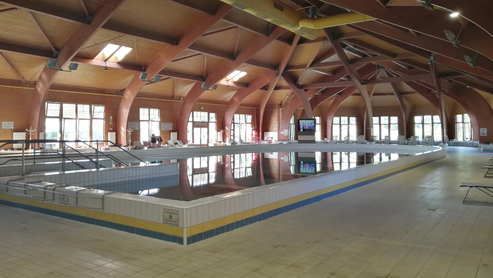
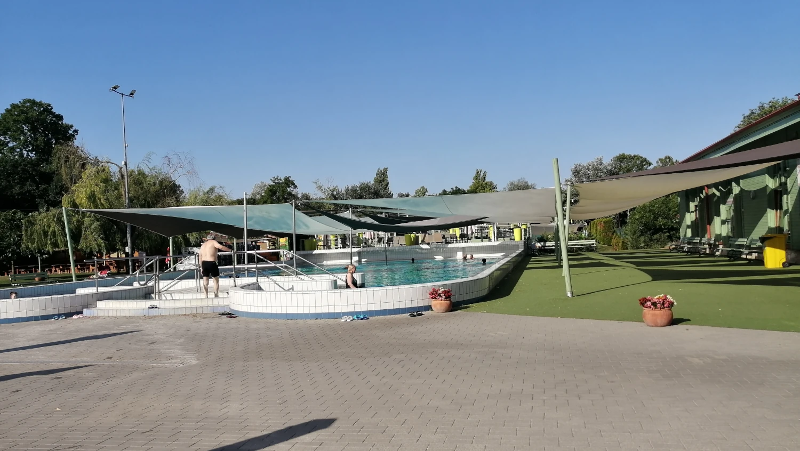
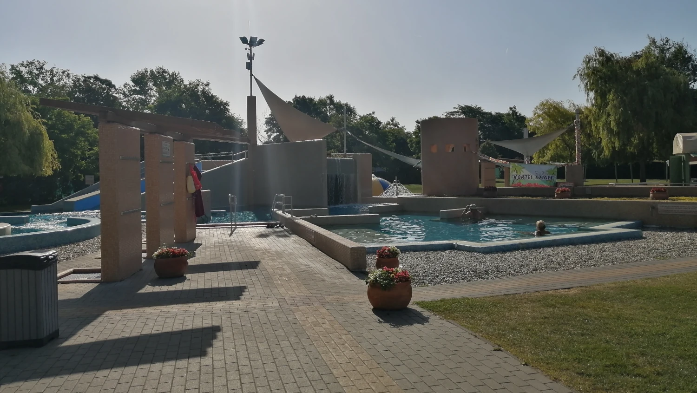
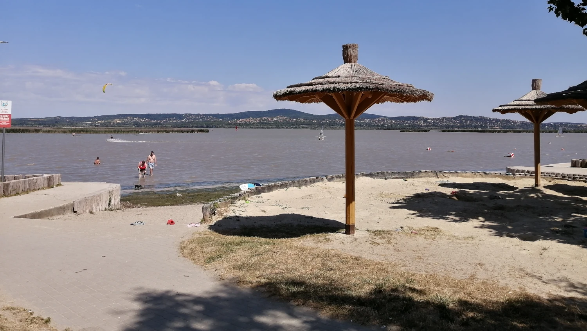
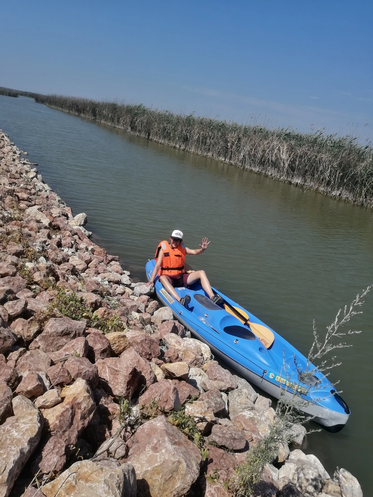